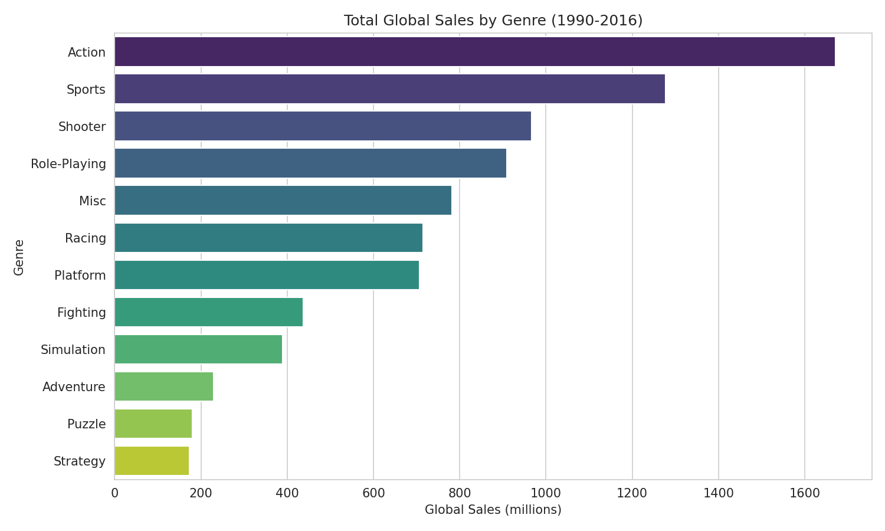
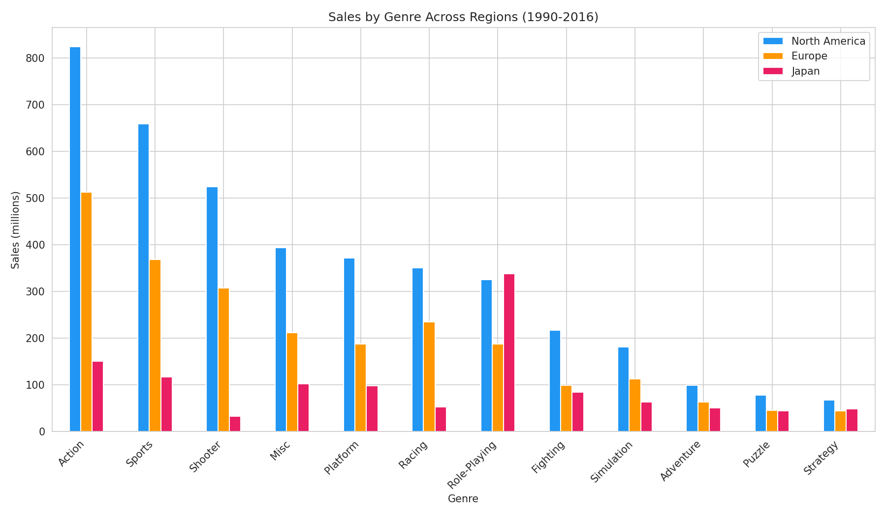
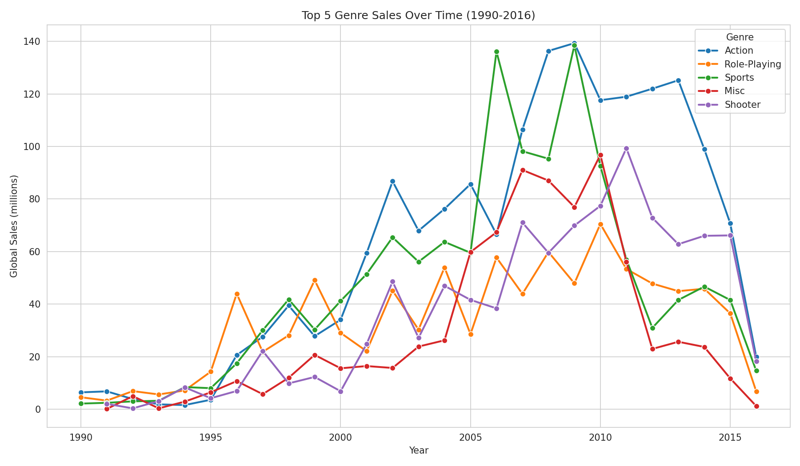
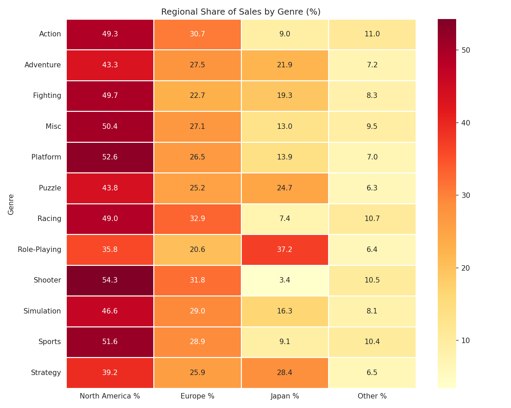

01 — Problem Definition
Introduce the Problem
For this project I decided to look at video game sales data. I play a lot of games so I thought it would be cool to actually dig into the numbers behind the industry instead of just picking a random topic I have no connection to. The main thing I wanted to figure out was how sales break down by genre in different parts of the world, and whether certain genres have gotten more or less popular over the years.
My Research Question
How do video game sales compare across genres and regions (North America, Europe, Japan), and has genre popularity changed over time?
I picked this because its something I can answer with exploratory analysis. I dont need to build a model or predict anything, I just need to look at the data carefully and see what patterns come up. I think its a useful question too because if you were a game developer or publisher youd probably want to know what kinds of games sell best in different markets. And even as just a gamer its interesting to see if the stereotypes are true, like Japan loving RPGs more than the west does.
I also liked that the question has a few different angles to it. Im not just asking "what genre sells the most," Im comparing regions against each other and looking at how things changed year to year. That gives me more to dig into without making the scope too broad.
02 — Data Description
About the Data
I got my dataset from Kaggle, its called "Video Game Sales" and it was originally scraped from a site called VGChartz that tracks game sales. One thing to note right away is that these are estimates not official numbers from the publishers themselves. Ill come back to that later in the limitations part.
Each row is one video game. The columns I cared about the most were Genre (like Action, Sports, RPG, Shooter, etc.), Year (when the game came out), and the sales columns which are broken up by region: NA_Sales, EU_Sales, JP_Sales, Other_Sales, and Global_Sales. All the sales numbers are in millions of units. Theres also columns for the game name, what platform it was on, and who published it.
Key Columns
Name — title of the game |
Platform — console it was on |
Year — release year |
Genre — category like Action, Sports, RPG |
Publisher — who published it |
NA_Sales, EU_Sales, JP_Sales, Other_Sales, Global_Sales — sales in millions per region
Something worth mentioning is this dataset only has games that sold over 100,000 copies. So smaller indie titles arent in here at all. Its also mostly physical sales so digital downloads and free to play games like Fortnite arent really represented. That becomes important later when looking at trends after 2010 or so.
03 — Data Cleaning & Preparation
Cleaning the Data
The data wasnt super messy but there were some things I had to fix before I could start making charts.
1
Removed rows where Year was missing (~270 rows)
I need year for my time trends so I cant really keep rows without it. I thought about maybe looking up the years manually but thats a lot of games and I wasnt sure itd be worth the effort. Losing 270 out of 16,000 rows isnt going to change my results much so I just dropped them.
2
Changed Year from a decimal to a whole number
For some reason Year was stored as floats like 2006.0 which looked weird. I just converted it to integers, nothing complicated there.
3
Filtered to only 1990–2016
When I looked at the year distribution there were barely any games tracked before 1990 and the data gets really incomplete after 2016. So keeping that range gave me the most reliable window. I know Im losing some data on both ends but I think its better than having really thin data messing up the trends.
4
Dropped a couple rows with no publisher
Like 2 rows had no publisher listed. Not a big deal at all, just cleaned them out.
After all that I had around 15,000 rows with 12 genres. Thats plenty to work with for this kind of analysis.
04 — Data Understanding & Visualization
What I Found
I made four charts. I tried to make each one answer a specific part of my question instead of just throwing charts in for no reason.
Chart 1: Total Global Sales by Genre
Started with this because I wanted a big picture view first. Which genres have made the most money overall? A horizontal bar chart works well here since Im comparing a bunch of categories.

Action is clearly the biggest seller by a lot. Sports and Shooter come in second and third. Puzzle and Strategy are at the bottom which makes sense since those tend to be more niche. Not super surprising but good to see confirmed with actual numbers.
Chart 2: Sales by Region for Each Genre
This gets at the regional comparison part of my question. I used a grouped bar chart so I could see NA, EU, and JP sales next to each other for every genre.

North America leads in almost everything which makes sense because its a big market. But the thing that stood out was how much higher Japans RPG sales are compared to their sales in other genres. Like for most genres Japan is a pretty small bar but for Role Playing its noticeably bigger. That was cool to see in the actual data.
Chart 3: How the Top 5 Genres Trended Over Time
Wanted to see if genres have risen or fallen in popularity. Line chart is the natural pick for time data. Only did the top 5 because putting all 12 on one chart would be a mess you cant read.

Almost everything peaks around 2007 to 2009 and then drops off. That was the Wii and PS3 and Xbox 360 era which was huge for gaming. The decline after that probably has more to do with digital sales taking over than people actually buying fewer games. This dataset just doesnt track digital stuff well.
Chart 4: Regional Share Heatmap
The bar chart showed raw numbers but I also wanted to see percentages. Like even if RPGs sell less overall than Action games, what share of those RPG sales comes from Japan? A heatmap lets you see the patterns across the whole table at once.

Probably my favorite chart. Japan accounts for like 25 to 30 percent of Role Playing game sales which is way more than their share in any other genre. And North America makes up over half of Shooter sales. Really shows that different regions have different tastes.
05 — Storytelling & Interpretation
Putting It Together
Looking at everything together the main takeaway is that the video game market isnt the same everywhere. Action and Sports do well across the board but once you start comparing regions you see some real differences showing up.
The Japan RPG thing is probably the most interesting finding. Its one of those things people in the gaming community always talk about but now I can actually point to the data and say yeah its real. Japan spends a way bigger proportion of their gaming budget on RPGs than North America or Europe does. On the flip side Shooter games are really an NA and EU thing.
The time trends also tell a story but you have to be careful about what story. If you just look at the chart it looks like gaming peaked in 2008 and has been dying since then. But thats not whats actually happening. The gaming industry has actually been growing a ton, its just that the growth is happening in digital sales and mobile and stuff thats not in this dataset. So the data is showing a real trend in physical sales, not a trend in gaming overall.
What would be misleading here?
If someone looked at the post-2010 decline and said "gaming is dying" that would be way off. The industry has been growing, its just that the growth is in digital sales and mobile which this dataset cant see. You have to think about what your data actually represents not just what the chart looks like.
I think thats honestly one of the bigger things I took away from this project. You have to pay attention to what the data actually represents and not just take the charts at face value.
06 — Limitations, Ethics & Reflection
Limitations and Reflection
Theres a few big limitations. The biggest one is the missing digital sales. As gaming moved more and more to digital distribution especially after 2010 this dataset captures less and less of whats actually going on. So my time trend analysis has that big caveat attached to it.
The data also comes from VGChartz which uses estimates not official numbers from publishers. For looking at broad patterns and comparisons I think the estimates are good enough but I wouldnt trust the exact sales figure for any individual game to be perfectly accurate.
The Other_Sales column is kind of frustrating too because it combines a ton of different countries into one number. I cant say anything specific about gaming preferences in South America or Southeast Asia because its all lumped together. Thats a gap that limits what conclusions I can actually draw.
What surprised me was how clear the Japan RPG preference showed up in the heatmap. I expected to see it but not that strongly. I was also surprised by how sharp the drop off was after 2008 across basically every genre. That made me think more carefully about what this data is actually measuring versus what I assumed it was measuring.
If I had more time I would want to find a dataset that includes digital sales to see if the trends look different. I would also want to break things down by platform to see if theres differences between Nintendo and PlayStation and Xbox in terms of what genres sell. Theres definitely a lot more you could explore with this topic.
07 — Code
Code
My code is written in Python using pandas for the data work and matplotlib and seaborn for the charts. Its organized step by step with comments explaining what Im doing. Nothing too fancy, just the basics we covered in class. You can click the button to copy it or scroll through below.
import pandas as pd
import matplotlib.pyplot as plt
import seaborn as sns
df = pd.read_csv("vgsales.csv")
print(df.head())
print(f"\n{df.shape[0]} rows, {df.shape[1]} columns")
print(df.dtypes)
print(df.describe())
print("\nMissing values:")
print(df.isnull().sum())
print(f"\nStarting with {df.shape[0]} rows")
df = df.dropna(subset=["Year"])
df["Year"] = df["Year"].astype(int)
df = df[(df["Year"] >= 1990) & (df["Year"] <= 2016)]
df = df.dropna(subset=["Publisher"])
print(f"After cleaning: {df.shape[0]} rows")
print("\nGenres:")
print(df["Genre"].value_counts())
sns.set_style("whitegrid")
plt.figure(figsize=(10, 6))
genre_sales = df.groupby("Genre")["Global_Sales"].sum().sort_values(ascending=False)
sns.barplot(x=genre_sales.values, y=genre_sales.index, palette="viridis")
plt.title("Total Global Sales by Genre (1990-2016)")
plt.xlabel("Global Sales (millions)")
plt.ylabel("Genre")
plt.tight_layout()
plt.savefig("images/viz1_genre_sales.png", dpi=150)
plt.show()
plt.figure(figsize=(12, 7))
region_sales = df.groupby("Genre")[["NA_Sales", "EU_Sales", "JP_Sales"]].sum()
region_sales = region_sales.sort_values("NA_Sales", ascending=False)
region_sales.plot(kind="bar", figsize=(12, 7), color=["#2196F3", "#FF9800", "#E91E63"])
plt.title("Sales by Genre Across Regions (1990-2016)")
plt.xlabel("Genre")
plt.ylabel("Sales (millions)")
plt.legend(["North America", "Europe", "Japan"])
plt.xticks(rotation=45, ha="right")
plt.tight_layout()
plt.savefig("images/viz2_regional_sales.png", dpi=150)
plt.show()
top5 = genre_sales.head(5).index.tolist()
yearly = df[df["Genre"].isin(top5)].groupby(
["Year", "Genre"])["Global_Sales"].sum().reset_index()
plt.figure(figsize=(12, 7))
sns.lineplot(data=yearly, x="Year", y="Global_Sales",
hue="Genre", marker="o", linewidth=2)
plt.title("Top 5 Genre Sales Over Time (1990-2016)")
plt.xlabel("Year")
plt.ylabel("Global Sales (millions)")
plt.legend(title="Genre")
plt.tight_layout()
plt.savefig("images/viz3_genre_trends.png", dpi=150)
plt.show()
plt.figure(figsize=(10, 8))
region_pct = df.groupby("Genre")[["NA_Sales", "EU_Sales", "JP_Sales", "Other_Sales"]].sum()
region_pct = region_pct.div(region_pct.sum(axis=1), axis=0) * 100
region_pct.columns = ["North America %", "Europe %", "Japan %", "Other %"]
sns.heatmap(region_pct, annot=True, fmt=".1f", cmap="YlOrRd", linewidths=0.5)
plt.title("Regional Share of Sales by Genre (%)")
plt.ylabel("Genre")
plt.tight_layout()
plt.savefig("images/viz4_region_heatmap.png", dpi=150)
plt.show()
print("\n" + "=" * 40)
print("FINDINGS")
print("=" * 40)
print(f"Top genre: {genre_sales.index[0]} ({genre_sales.values[0]:.1f}M)")
print(f"Total games: {len(df)}")
print(f"Genres: {df['Genre'].nunique()}")
print(f"Years: {df['Year'].min()} to {df['Year'].max()}")
jp_top = df.groupby("Genre")["JP_Sales"].sum().idxmax()
na_top = df.groupby("Genre")["NA_Sales"].sum().idxmax()
print(f"#1 in NA: {na_top}")
print(f"#1 in Japan: {jp_top}")
08 — References & AI Transparency
References and AI Use
- Dataset: Gregory Smith, "Video Game Sales" on Kaggle (link). Data originally from VGChartz.com.
- Tools: Python, pandas, matplotlib, seaborn. I looked at official docs when I needed help with syntax.
- Course: DTSC 2301 lectures and class examples.
AI Transparency
I used Claude (Anthropic) to help me with this project. I used it to help brainstorm which dataset to pick, to get starter code that I could run and learn from, and to help draft sections of this write up. I went through everything after and edited it and made sure I understood the code and the analysis. The decisions about what to clean and what charts to make were discussed with the AI but I checked the reasoning myself. Heres the link to the full conversation: [link]